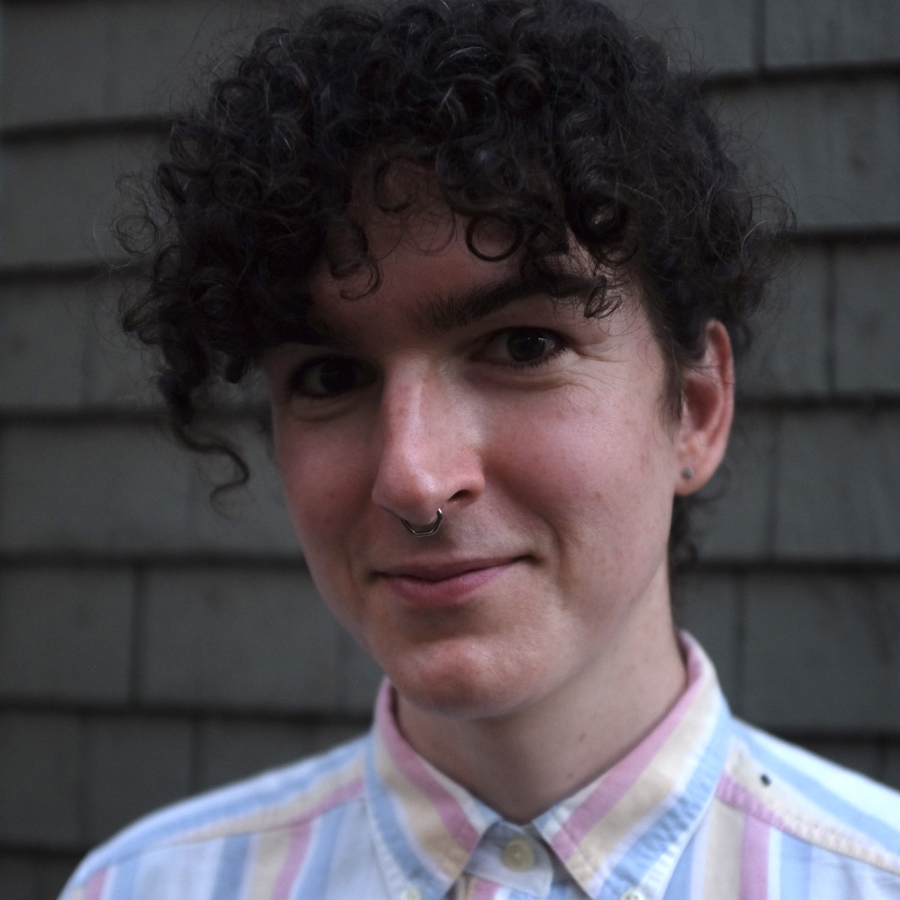

Austen Mack-Crane is a mathematical and computational sociologist studying formal theories of belief systems, the shape of online political discussion, and hierarchy and roles in social networks. She has also dabbled in environmental economics, public health, data science, and microbial ecology. She likes guiding students in writing and making inferences about the social world, jumping into new research topics, climbing mountains, and asking impertinent theory questions in empirical talks. She is on the job market AY 2026-7!